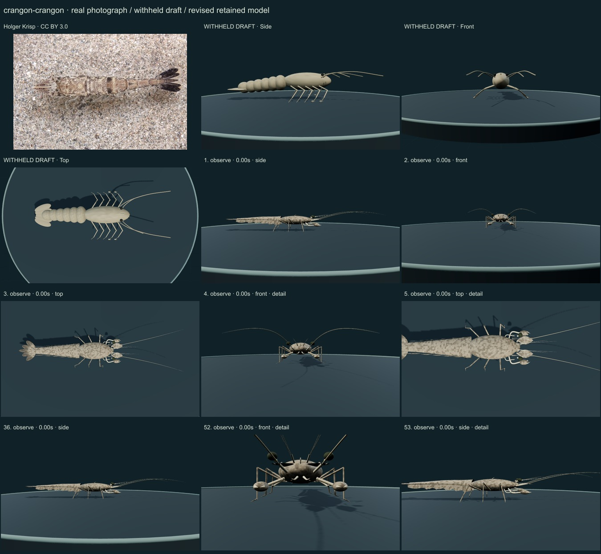
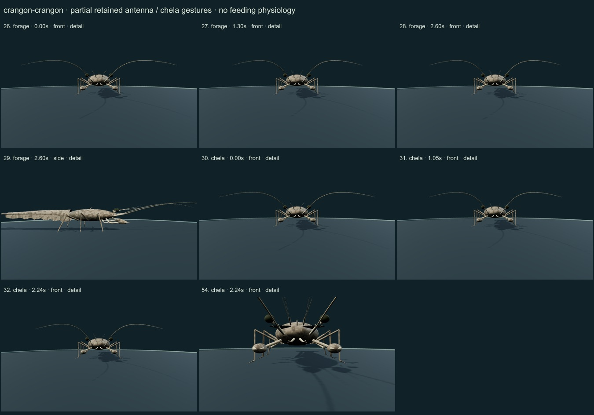
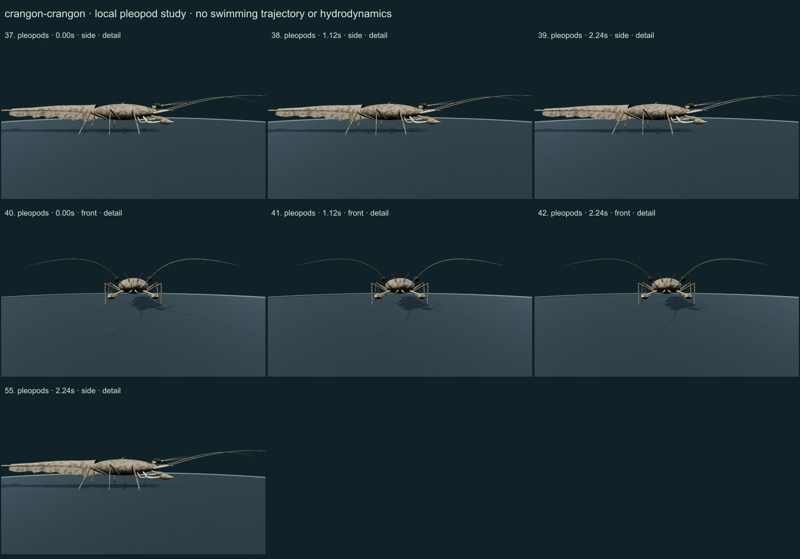
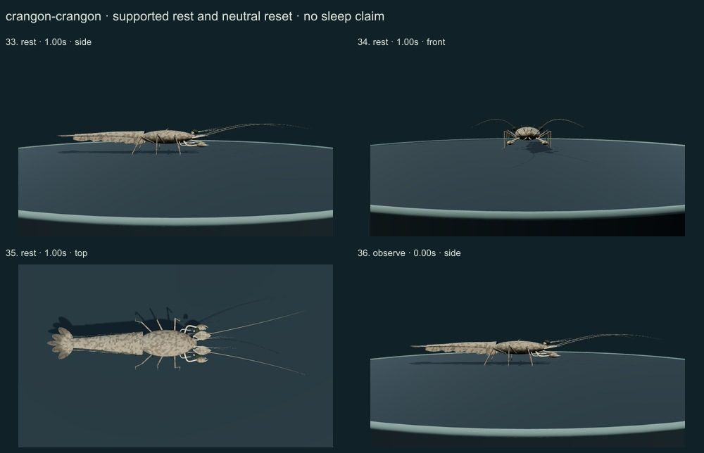
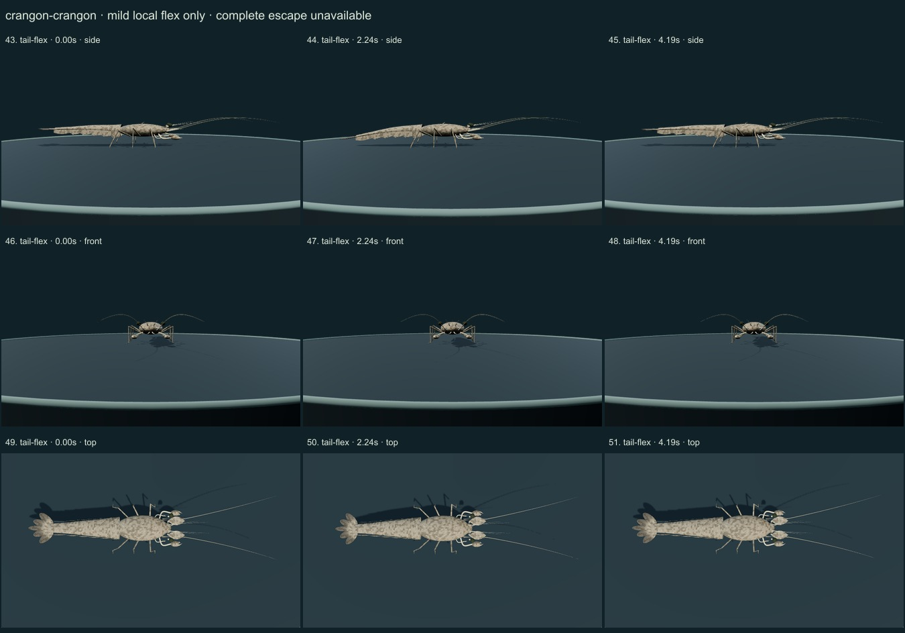
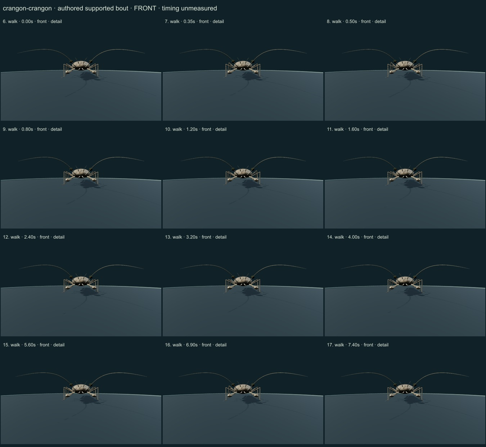
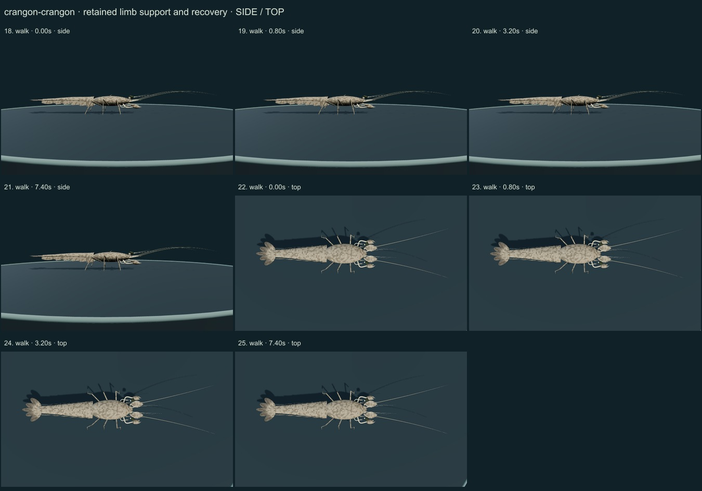

PhenoVoxel Archive · v0.6.22 · October 25, 2026
Brown shrimp
This release reaches 270 records after verified publication. 30 saved drafts remain held; 280 remain to 550, including 250 without saved drafts. Release register.
Authentic Holger Krisp CC BY3.0 photo compared with selected actual Naturalis diagnosis and MarLIN species context. Selected primary Arnott, Neil and Ansell1998 pages1–2/5–6 and actual page6 Figures3/4 were reviewed for escape scope; measured coordinates, rates, size dependence and trajectories were not imported.
Holger Krisp · CC BY 3.0. Authentic Holger Krisp CC BY3.0 source labels Crangon crangon. Selected brown/cream camouflage and dorsal posture do not establish all chromatophore states, stage/sex, calibrated optics or measured body dimensions. Resized inside 1000 px, flattened and JPEG encoded; no generative alteration.
Exact creators, licenses, source/download/local checksums and access scopes remain in the data. Primary figures are linked, not redistributed.
Distinct flattened broad cephalothorax with a short unarmed rounded rostrum, continuous tapering abdomen, smooth sixth dorsal somite, stout first-pair subchelae and smaller second-pair chelae. Six posterior main walking limbs support the body. Separate antennal scales, five simple pleopod pairs, a telson and four uropodal lobes replace the same rounded draft used for the prawn.
Original brown/cream fine mottling and darker fan ends replace a flat beige draft. The initial overly pale coarse speckling was reduced. Selected pigmentation is not a calibrated chromatophore state, scan, or photograph texture; fine dorsal segment boundaries and natural optical variation remain weak.
Remaining: Still partly stylized: head cuticle is too smooth in places, mottling and dorsal somite separation remain approximate, and ventral anatomy, fan rays/setae, fine spine positions and actual chromatophore changes are incomplete. Limb segmentation and support order are authored, not species-measured. No swimming trajectory, full escape, feeding or hydrodynamics; no independent biological validation.
Same-model fixed-length support/recovery and stopping, local subchela/antenna gestures, simple pleopod articulation and mild serial flex are available. The full escape is explicitly unavailable: an upright tail bend does not reproduce the studied body roll, cephalothorax/abdomen jackknife and head-fan mechanism.
Partly stylized original educational reconstructions. Proportions, natural cuticle optics, biological timing, forces, food contact, sensing and physiology are incomplete or unmeasured. No independent specialist validation, scientific certification or accuracy percentage. Software checks and screenshots are not empirical validation.
55 actual nonblank final viewer states individually inspected on 7 labelled sheets. Neutral full-organism and enlarged diagnostic views distinguished. Qualitative author assessment, not independent scientist certification.







Partly stylized original educational reconstructions. Proportions, natural cuticle optics, biological timing, forces, food contact, sensing and physiology are incomplete or unmeasured. No independent specialist validation, scientific certification or accuracy percentage. Software checks and screenshots are not empirical validation. Prior 267 species objects and original wolf/tiger meshes are unchanged. Legacy Protista/Monera reporting categories are not monophyletic kingdoms. Occurrence records are not native-range boundaries.
Exact findings, sources and screenshot hashes